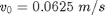

Contents
% Joel Lubinitsky - 02/11/15 % MAE 321 - HW 4.2 clear all close all clc
Problem 2:
The figure on the second page of this homework sheet shows the displacement of a vibrating spring-mass-damper. From the plot, determine the undamped natural frequency, the damping ratio, the damped natural frequency, the inital position, and the initial velocity. From these values, recreate the oscillation solution expression.
Unknown:
Known
xPeak1 = 3; % cm xPeak2 = 0.8; % cm tPeak1 = 0.3; % s tPeak2 = 2.8; % s xInitial = 2; % cm xStep = 2.5; % cm tInitial = 0; % s tStep = 0.08; % s
Conversions
xPeak1 = xPeak1 / 100; % m xPeak2 = xPeak2 / 100; % m xInitial = xInitial / 100 % m xStep = xStep / 100; % m
xInitial =
0.0200
Calculations
period = tPeak2 - tPeak1;
delta = log(xPeak1 / xPeak2);
ratioDamping = delta / sqrt(4 * pi ^ 2 + delta ^ 2)
frequencyNatural = delta / (ratioDamping * period)
frequencyNaturalDamped = (2 * pi) / period
vInitial = (xStep - xInitial) / (tStep - tInitial)
time = [0 : 0.01 : 10];
x = xUnderdamped(xInitial, vInitial, ratioDamping, ...
frequencyNatural, frequencyNaturalDamped, time);
ratioDamping =
0.2059
frequencyNatural =
2.5683
frequencyNaturalDamped =
2.5133
vInitial =
0.0625
Plot
figure(1) hold on grid on title('Measured Underdamped Response') xlabel('Time, t [s]') ylabel('Displacement, x(t) [m]') plot(time, x, '-x')
Results
The given system has an undamped natural frequency , damping ratio , damped natural frequency , initial position , and initial velocity .